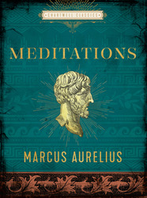

Marcus was born in Rome on 26 April 121. His birth name is sometimes given as Marcus Annius Verus, but sources assign this name to him upon his father's death and unofficial adoption by his grandfather, upon his coming of age.[He may have been known as "Marcus Annius Catilius Severus". Upon his adoption by Antoninus as heir to the throne, he was known as "Marcus Aelius Aurelius Verus Caesar" and, upon his ascension, he was "Marcus Aurelius Antoninus Augustus" until his death
Marcus Aurelius had a diverse family background. His paternal family, the gens Annia, had Roman Italo-Hispanic origins, with claims of descent from Numa Pompilius. They moved to Ucubi in Iberian Baetica and rose to prominence in Rome in the late 1st century AD. Marcus's great-grandfather was a senator, and his grandfather was made patrician. He was also related to the Nerva-Antonine dynasty through his grandmother. On his mother's side, Marcus's mother, Domitia Lucilla Minor (Domitia Calvilla), came from a wealthy Roman patrician family with substantial assets in Rome, including brickworks and a villa on the Caelian hill. Marcus was born and raised in the Horti Domitia Calvillae and had a deep connection to the Caelian hill. Marcus was adopted into the Roman Italo-Gallic gens Aurelia at the age of 17 by Antoninus Pius, who hailed from the Aurelii Fulvi, a branch of the Aurelii with roots in Roman Gaul.
Works
A more intimate contact with the thoughts pursued by Marcus during the troubling involvements of his reign, though not what would have been historically most valuable, his day-to-day political thoughts, can be acquired by reading the Meditations. To what extent he intended them for eyes other than his own is uncertain; they are fragmentary notes, discursive and epigrammatic by turn, of his reflections in the midst of campaigning and administration. In a way, it seems, he wrote them to nerve himself for his daunting responsibilities. Strikingly, though they comprise the innermost thoughts of a Roman, the Meditations were written in Greek—to such an extent had the union of cultures become a reality. In many ages these thoughts have been admired; the modern age, however, is more likely to be struck by the pathology of them, their mixture of priggishness and hysteria. Marcus was forever proposing to himself unattainable goals of conduct, forever contemplating the triviality, brutishness, and transience of the physical world and of humanity in general and himself in particular; otherworldly, yet believing in no other world, he was therefore tied to duty and service with no hope, even of everlasting fame, to sustain him. Sickly all through his life and probably plagued with a chronic ulcer, he took daily doses of a drug; the suggestion has been made that the apocalyptic imagery of passages in the Meditations betrays the addict. More certain and more important is the point that Marcus’s anxieties reflect, in an exaggerated manner, the ethos of his age.
The Meditations, the thoughts of a philosopher-king, have been considered by many generations one of the great books of all times. Although they were Marcus’s own thoughts, they were not original. They are basically the moral tenets of Stoicism, learned from Epictetus: the cosmos is a unity governed by an intelligence, and the human soul is a part of that divine intelligence and can therefore stand, if naked and alone, at least pure and undefiled, amid chaos and futility. One or two of Marcus’s ideas, perhaps more through lack of rigorous understanding than anything else, diverged from Stoic philosophy and approached that Platonism that was itself then turning into the Neoplatonism into which all pagan philosophies, except Epicureanism, were destined to merge. But he did not deviate so far as to accept the comfort of any kind of survival after death.
The book is divided into 12 chapters, often referred to as "books," each containing various short passages or aphorisms. The organization is not thematic but rather reflects the order of Marcus Aurelius's thoughts and reflections at different times. Throughout the book, Marcus Aurelius provides practical advice on how to live a good and meaningful life. He encourages self-examination, self-control, and a focus on the things within one's control while accepting what is beyond one's control.
The Stoics
According to tradition, Marcus was a Stoic. His ancient biographer, Julius Capitolinus, describes him as such. Marcus also makes reference to a number of Stoics by whom he was taught and, in particular, mentions Rusticus from whom he borrowed a copy of the works of the Stoic philosopher Epictetus (Med. 1.7). However, nowhere in the Meditations does Marcus explicitly call himself a Stoic. This may simply reflect the likelihood that Marcus was writing only for himself rather than attempting to define himself to an audience. Yet it is probably fair to admit that Marcus was at least open to ideas from other philosophical traditions, being impressed by Stoic philosophy, but not merely an unthinking disciple of Stoicism.
As has been noted, Marcus was clearly familiar with the Discourses of Epictetus, quoting them a number of times (see Med. 11.33-38). Epictetus’ fame in the second century is noted by a number of ancient sources, being hailed as the greatest of the Stoics (Aulus Gellius 1.2.6) and more popular than Plato (Origen Contra Celsus 6.2). If Marcus felt drawn towards Stoicism, then Epictetus would surely have stood out as the most important Stoic of the time. It is perhaps reasonable, then, to turn to Epictetus in order to explore the philosophical background to the Meditations.
Marcus Aurelius faced numerous challenges during his reign, including wars, political intrigue, and plagues. Despite these difficulties, he remained committed to Stoic principles, emphasizing the importance of virtue, resilience in the face of adversity, and the acceptance of fate. His writings continue to be widely read and respected in modern times, making him one of the most famous Stoic philosophers in history. Stoicism, as a philosophy, also enjoys a resurgence of interest in contemporary society, as its principles offer practical guidance for dealing with the challenges of everyday life.